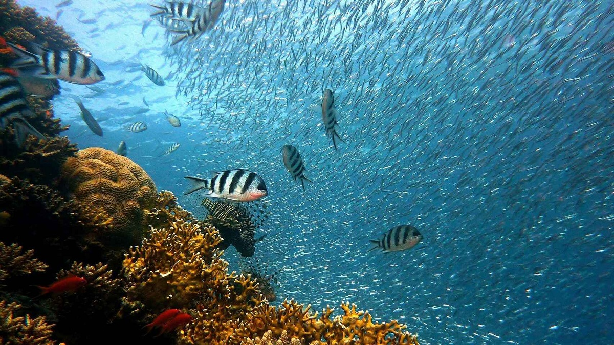

Aves

Las aves son animales vertebrados que se distinguen por tener plumas, alas y la capacidad de volar, aunque no todas las especies lo hacen.
Su diversidad es asombrosa, con más de 10,000 especies conocidas en todo el mundo.
Las aves juegan roles cruciales en los ecosistemas, como polinizadoras, controladoras de plagas y dispersoras de semillas.
Además, son indicadores clave de la salud ambiental, reflejando cambios en los hábitats y en la biodiversidad.
Saber más de Aves
Acuáticos

Los animales acuáticos son una parte fundamental de la biodiversidad del planeta,
habiendo evolucionado para adaptarse a las condiciones específicas de sus ecosistemas.
Características de los animales acuáticos:
- Respiran a través de órganos especializados.
- Tienen reproducción sexual y asexual.
- Habitan diferentes ecosistemas:
Los animales acuáticos no pueden vivir en cualquier tipo de agua,
ya que cada especie está adaptada a un entorno específico.
Saber más de Acuáticos